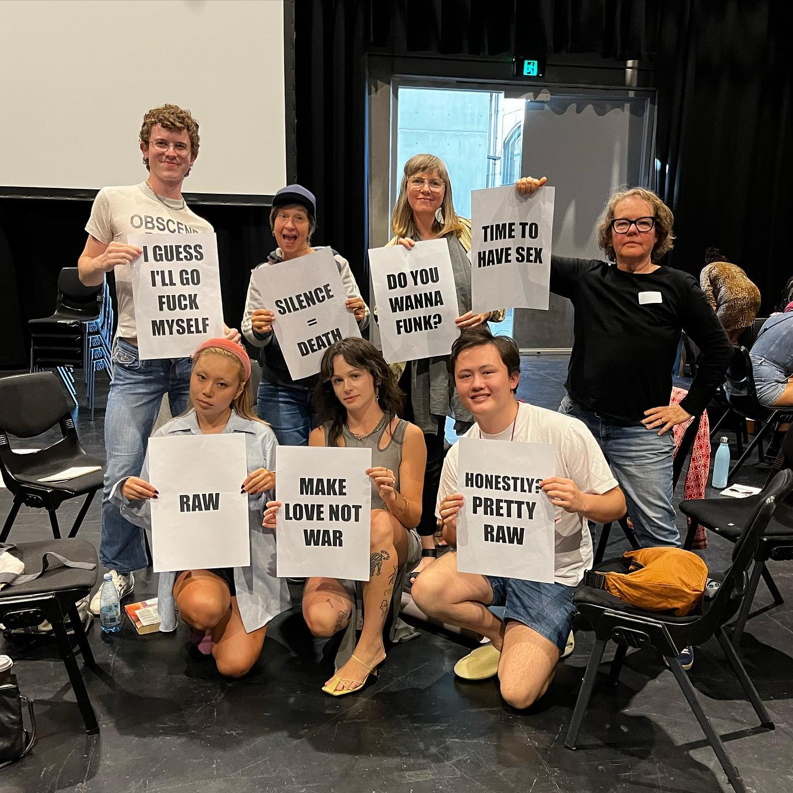
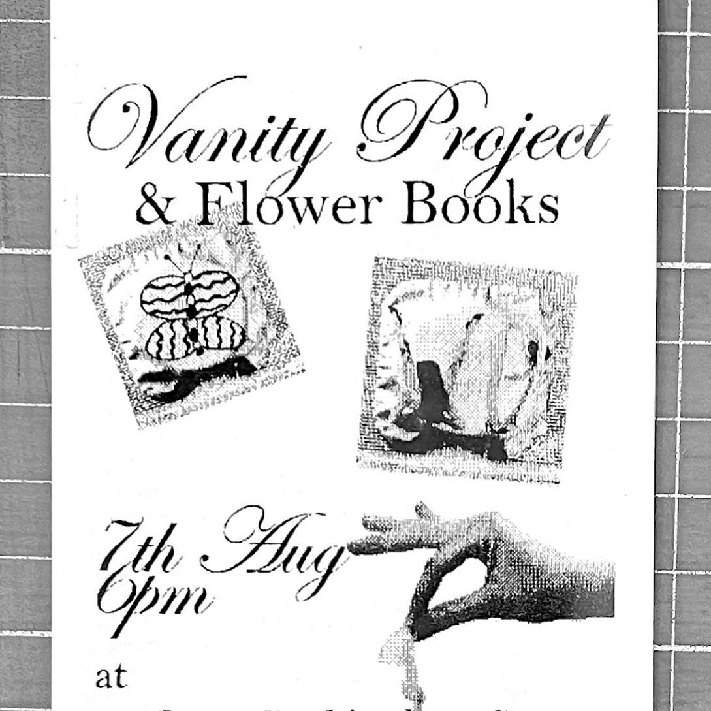
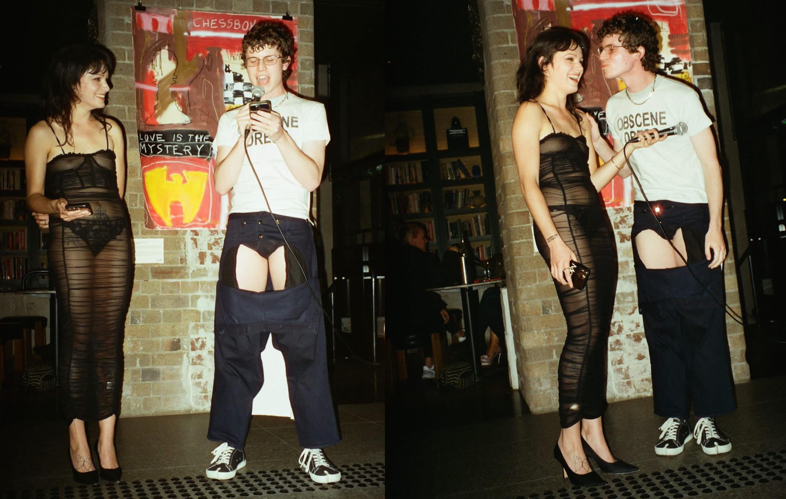

Laura Luciana is a freelance critic, performer, and arts worker based in NYC.
She recently was awarded First Class Honours for her Art Theory thesis:
WE WANK EVERYTHING: A Nonsovereign Reappraisal of Liberatory Collective Masturbation in Sydney’s Jerk-Off Spaces
She performed Enduring Cruel Optimism: a Performance Reading with Levent Can Kaya at Schmick Contemporary, and read at Gus McGrath's Queens of the Circulating Library and served as editor for his forthcoming book.
Laura's art criticism has been commissioned by un Projects, Memo Review, and Art Monthly, and in collaboration with film critic Charles Carrall has recorded and performed as Vanity Project for over four years.
Vanity Project is primarily a podcast, but also often critical writing, live performance and reading, events and curatorial projects. They have emceed parties at the Art Gallery of NSW (AGNSW), performed at the Ace Hotel, been Artists In Residence at The Lock Up, and commissioned by Un Extended. Most recently they had their third birthday in residence at Brand X for the ninth season of the Flying Nun program.
Enduring Cruel Optimism: A Performance Reading with Levent Can Kaya at Schmick Contemporary; a public program for Sydney Jarrett's solo exhibition, An Order into Another. April 2025, photo by Lachie Thompson.
Blogging with Joe Bloggs 10.10.2020
One could use this setup to write a blog short updates. It’s best for text, but for images use the loading="lazy" attribute:
<img src="image.jpg" loading="lazy">
You might embed an iframe, but linking to a YouTube video is simpler.
No‑hassle systems for publishing on the web 09.20.2020
When did Charles become a fag? When did Laura become a hag? Together, Vanity Project explore a sexless, but very sexy dialectic: this time, in the form of an introductory reading for the “Fag/Hag” launch. The new book by Max Fox and Madeline Laine-MicKinley was published by Rosa Press and launched on Monday the 26th of August in Sydney.
“I’ve always had a fascination for gay boys, lesbians, and transgender people,” Laura confesses as she asks the question, is it more desperate for a hag to need her fag? Or the other way round? After Freedom! ‘90 comes the animated aughts. Modern Family, Glee, Prince Charming. Vanity Project were born this way, baby! And they wave the Fag/Hag Flag with pride!
Rearranging, recollecting and recovering: these are the actions that define Claudia Nicholson as she reaches back into her archive. ‘If The Mountain Is Burning, Let It Burn' is a sombre, blurry and glittering exhibition, and the latest output of the University of Technology Sydney’s (UTS) Artist in Residence program. Positioned within the Ultimo campus, UTS Gallery is dimly lit, as if you were searching for photographic clarity through a smouldering haze.
Designed and written by Laura Luciana. Curated by Laura Luciana and Charles Carrall. As Vanity Project we held a reading event with Flower Books to create a sexy and scholarly discourse about condoms, jerking off, latex and gloves as fetishwear, and doing it RAW.
[Framework: React] Meditation Piece
Rearranging, recollecting and recovering: these are the actions that define Claudia Nicholson as she reaches back into her archive. ‘If The Mountain Is Burning, Let It Burn' is a sombre, blurry and glittering exhibition, and the latest output of the University of Technology Sydney’s (UTS) Artist in Residence program. Positioned within the Ultimo campus, UTS Gallery is dimly lit, as if you were searching for photographic clarity through a smouldering haze.
Seeing the doomscroll (usually contained in the phone) materialise in the gallery really looks like “too much information”—too much information being compulsively excavated by online users posting, too much information that we ingest by being “chronically online."
We joke about conjuring the ghosts of Vanity Project’s imprisoned forefathers, Oscar Wilde and the Marquis de Sade, locked up for their indecent perversions. We’re just like them! In another time we would be punished for speaking so freely, and joyfully, about sex and sexuality. Thankfully, our unrelenting propulsion to obscenity has opened doors rather than sealed them shut.
Taking Western Sydney as its starting point, Jus Diddit asks: what does it take to create vibrant communities and resonant subcultures, and where do you start? For the local ravers, punks, and queers celebrated and archived in Jus Diddit, the answer is simple: they just did it. Curators Levent Can Kaya and Carmen Mercedes Gago Schieb speak in the language of the scenes because they inhabit these scenes.
▼
Vanity Project: Looking for A Third, video courtesy of Soph Tan, November 2024.Vanity Project Terrible Twos Birthday, video courtesy of Soph Tan, June 2023.Artists in Residence at The Lock Up, May 2024.Vanity Project performing Lube research as supported by The Lock Up at Substance Series'GREASE, May 2024. Photo courtesy of Chris Brown.

Vanity Project speaking at Liveworks: Futures for Performance Space at Carriageworks, October 2023.

Vanity Project editing and convening for Flower Books, August 2024. Poster Courtesy Laura Luciana.Vanity Project performing HARDsoft at The Creator Incubator for cake, July 2023. Photo courtesy of Chris Brown.

Vanity Project performing HARDsoft for Dolar Rosa at The Ace Hotel, September 2023. Photo courtesy of Chela.Vanity Project emceeing P2P Apocalyptus: An Inter Art School Ball for UNSW A&D, NAS, SCA at The Art Gallery of NSW, September 2023. Photo courtesy of Ava Lacoon.